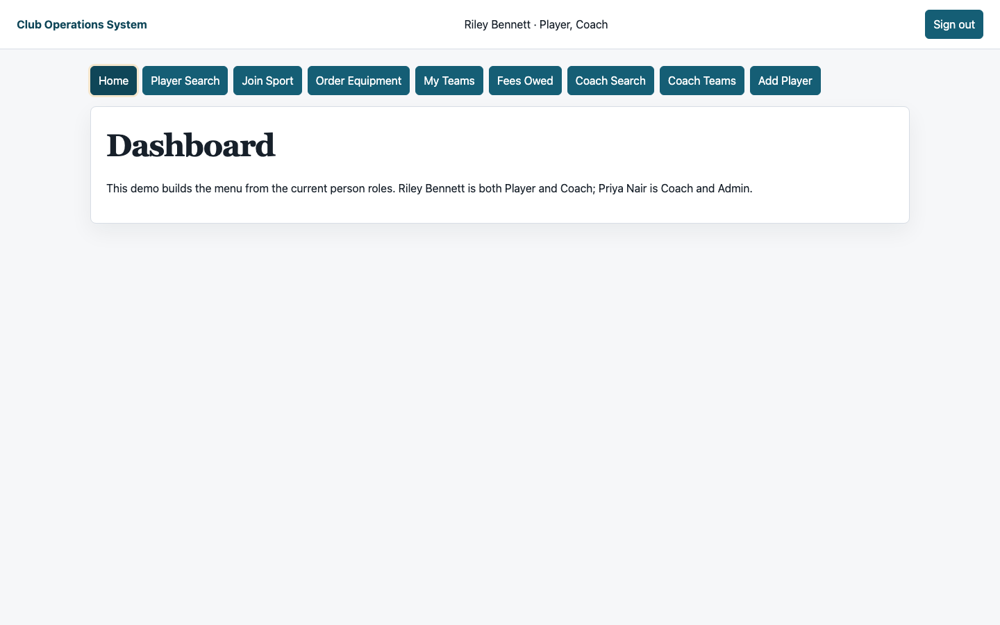

Static walkthrough
Local HTML, CSS, and JavaScript select a fixed evidence record.
Interactive evidence walkthrough
The page changes only the evidence shown below. It does not connect to the PHP/MySQL application, submit data, run database writes, or collect visitor information.
Architecture boundary
Local HTML, CSS, and JavaScript select a fixed evidence record.
Every rule links to repository source, tests, the ERD, or a fixture capture.
Docker runs PHP 8.3 and MySQL 8.0 for executable verification.
Four verified scenarios
Scenario 1 of 4

Reproduce the evidence
make verify rebuilds isolated fictional fixtures and runs schema, concurrency, HTTP, security, and accessibility checks. make verify-image confirms the pinned database image supports the documented architectures.